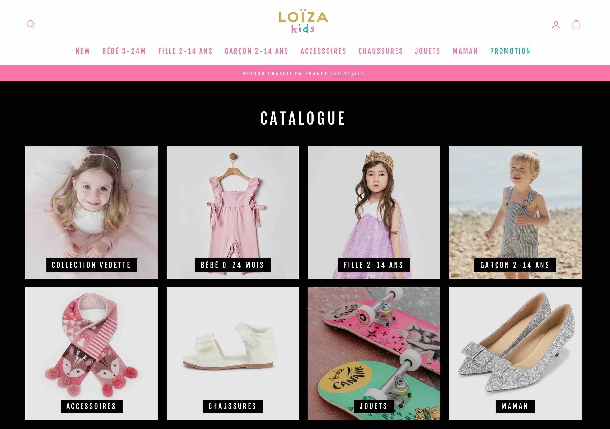

<!-- 
    Name: Annabel Cheng
    File Name: projects.html
    Date Created: March 01, 2025
    Description: 4 projects information built by the content creator.
-->

<main class="projects-page">
  <!-- Container for all project elements -->
  <div class="projects-container">
      <!-- Project 1: Portfolio Webpage -->
      <div class="project active">
          <h2>Portfolio Webpage</h2>
          
          <p class="description">
              A personal portfolio webpage showcasing my skills, projects, and experiences. This organized 
              and visually engaging layout highlights my expertise, achievements, and creative work.
          </p><br>
          <p class="date"><em>Completed: March 2025</em></p>
          <p class="technologies">Technologies Used: HTML, CSS, JavaScript.</p><br>
      </div>

      <!-- Project 2: Shopify E-commerce Website -->
      <div class="project">
          <h2>Shopify E-commerce Website</h2>
          
          <p class="description">
              Independently designed and launched a fully functional e-commerce website using Shopify, 
              overseeing the entire development process from concept to execution. Implemented user-friendly navigation, 
              customized product listings, and integrated secure payment and shipping solutions. Successfully drove traffic 
              through organic marketing strategies, resulting in confirmed sales within the first week of launch. 
              Demonstrated entrepreneurial initiative, technical proficiency, and a strong understanding of customer 
              experience and online retail dynamics.
          </p><br>
          <p class="date"><em>Completed: March 2021</em></p>
          <p class="technologies">Technologies Used: Shopify Platform, Adobe Suites.</p><br>
      </div>

      <!-- Project 3: Battery Quality Tracking System -->
      <div class="project">
          <h2>Battery Quality Tracking System</h2>
          
          <p class="description">
              Designed and developed a Java program to track the quality of manufactured coin cell batteries. 
              Used UML diagrams and flowcharts to plan system architecture and logic, ensuring accurate quality 
              analysis and reporting. Implemented and tested features for data input, analysis, and optimization.
          </p><br>
          <p class="date"><em>Completed: November 2024</em></p>
          <p class="technologies">Technologies Used: Java</p><br>
      </div>

      <!-- Project 4: Weight & Height Converter -->
      <div class="project">
          <h2>Weight & Height Converter</h2>
          
          <p class="description">
              A Python project that converts weight and height between different units, such as kilograms 
              to pounds, meters to feet, and vice versa. Clike <a href="https://github.com/c-annabel/MyProjects" target="_blank"><b>Source Code</b></a> to discover more.
          </p><br>
          <p class="date"><em>Completed: October 2022</em></p>
          <p class="technologies">Technologies Used: Python</p><br>
      </div>

      <!-- Navigation Buttons for Project Browsing -->
      <div class="navigation-container">
          <button id="prevBtn" class="nav-btn">Previous</button>
          <button id="nextBtn" class="nav-btn">Next</button>
      </div>

      <!-- Container for End Message -->
      <div id="endMessage" class="end-message"></div>
      <!-- Inspirational Quote at the Bottom -->
      <div class="star-wars-quote">May the Force be with you!</div>
  </div>
</main>

